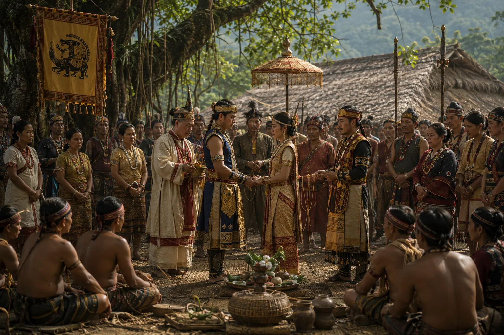

Matrimonial Alliances with Borahi and Moran Rulers
1235–1240 · The coming of Sukaphaa

Sukaphaa adopts an assimilative policy by establishing matrimonial bonds with the indigenous Moran chief Bodousa and the Borahi king Thakumtha, marrying local princesses and integrating them into court governance.
Sources have not yet been catalogued for this record.
People: Badaucha (Moran chief), Chaolung Sukaphaa, Thakumatha (Barahi chief)